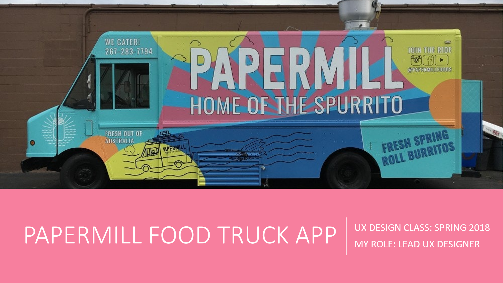
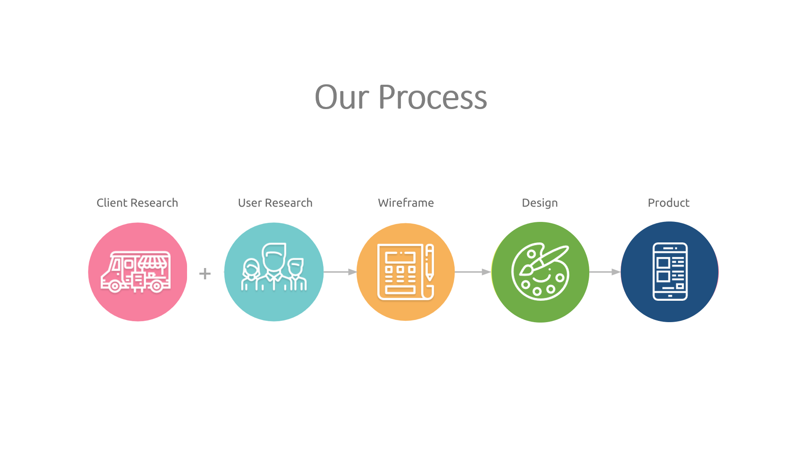
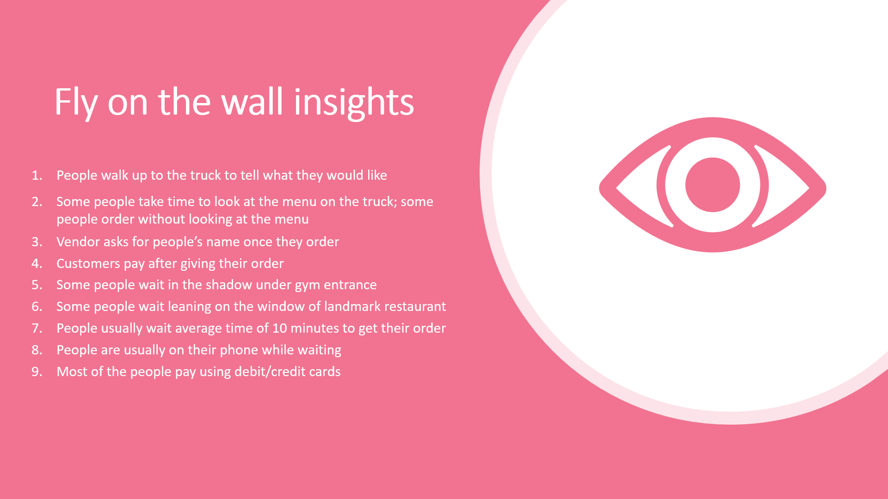
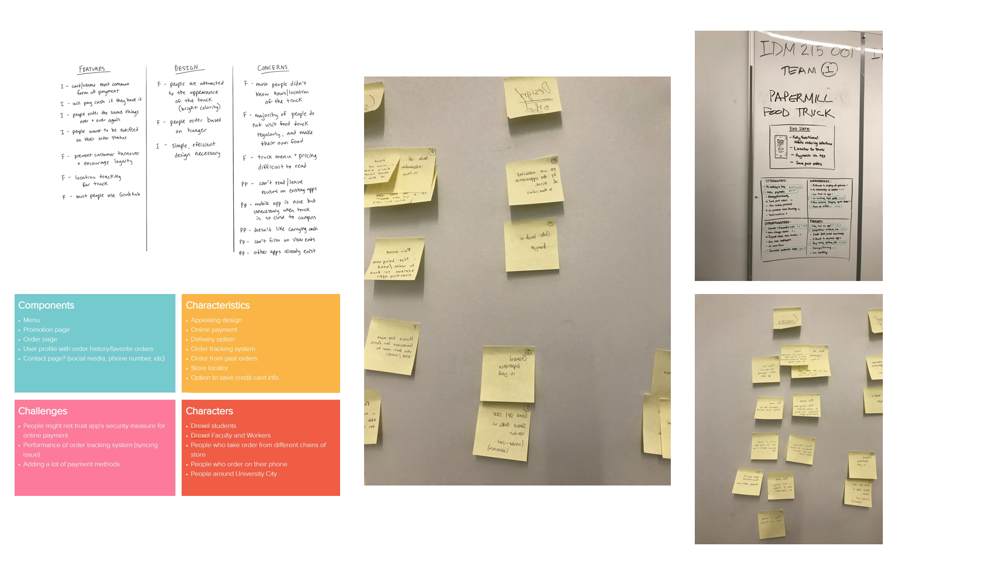
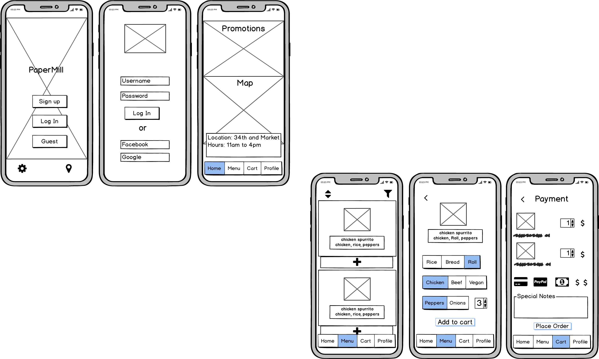
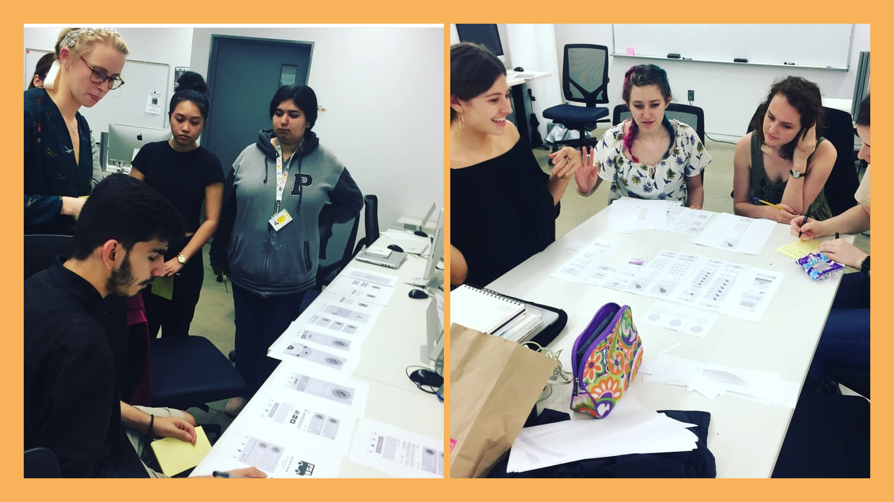
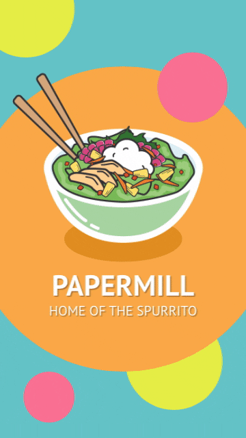
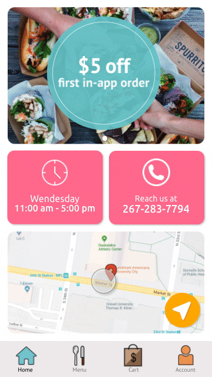

PAPERMILL FOOD TRUCK APP

About the project
Overview
For the spring 2018 User Experience (UX) course, our team was asked to build a mobile application prototype for a local food truck over a timeline of 10 weeks. We selected a truck called “PaperMill”, which sells Vietnamese-Mexican fusion food on Market street, at the heart of Drexel University’s campus.
Project Brief
Timeline: 10 weeks
The team: Meet Palan, Sanika Rann, Alyssa Klein, Woo Song
My role: Product Design, Visual Design, User Experience Design and Research
Why: Bring more customers to the business
Provide business an additional channel option to gain more customers
Increase customer convenience and satisfaction
What: View menu options and order food remotely
Collect data on participating customers to build the best customer experience
Allow customer to create a profile that saves their past and favorite orders
Provide many options for mobile payment
Show the truck location and hours, as they are inconsistent throughout the week
How: Minimize in-person wait time in front of the truck
Simple and effective design to display menu, pricing, promotions, etc.
Display accurate information on the truck and keep it up to date
Prevent customer turn-over by catering to the customers across multiple platforms
Our process/approach
Talking to the owner: After choosing the food truck we wanted to design for, we went to the food truck and talked to the owner to gain some insights that would help our research process. We were surprised to know that the food truck already exists on grubhub and even more surprised to know they hardly ever receive any orders from grubhub. When I asked him why he thinks this happens, he said:
1. There are already a lot of popular restaurants on grubhub so it is really hard to stand out for the food truck.
2. Papermill only has three main items and is heavily dependent on their customization options. It is really hard to put that level of customization settings on grubhub which makes their menu look boring.
3. My critique: Even the samall level of customization they currently have on Grubhub takes a lot of effort from the user and makes customization boring.
After we finished talking to the truck owner, we decided to do the “fly on the wall” exercise. We observed some of the people ordering and waiting at the truck.

BRAINSTORMING ACTIVITIES
Understanding the project
We did a number of brainstorming activities including SWOT analysis, 4 components, affinity mapping to better understand the overall project, user needs and our end goals.

UNDERSTANDING OUR USERS
Identifying who we are designing for
After talking to the food truck owner, we discovered that most of the people who eat at their truck are Drexel University students and staff (professors and other workers) since they are located right besides the University main building.
HOW IS A TYPICAL FOOD TRUCK EXPERIENCE LIKE?
Mapping out the journey of people eating at food trucks to better understand the whole expereince
SKETCHING OUT IDEAS
CONVERTING SKETCHES INTO WIREFRAMES

PAPER PROTOTYPE TESTING
Gaining layout and user flow insights from the testing
We printed your wireframes on paper and tested them out with a few Drexel students and professors to understand what they think of our general screen layouts and they expect the user flow to be.

LOW FIDELITY PROTOTYPE TESTING
Conducting usability testing with low fidelity prototype with some Drexel students and professors
View full usability testing report for low fidelity prototype
MAKING IT COLORFUL: JUST LIKE THE FOOD TRUCK
Mood board and style guide
MID FIDELITY PROTOTYPE TESTING
Making the necessary changes based on the insights from low fidelity testing and now conducting usability testing with mid fidelity prototype with the same people as last time
View full usability testing report for mid fidelity prototype
FINAL PRODUCT: HIGH FIDELITY DESIGNS
 
Login: You can sign up and login to earn rewards or choose to continue as a guest.
Menu: Choose from the three main items: Spurrito, Bowl, and Banh Mi. Are you team blue, yellow or pink?
Customization: Customize your choice with some excting add ons with a fun little cart wheel that looks an egg.
Payment: Go to your cart and choose to pay with so many different options including venmo! You can also save yur card details for the future. Give your contact information and set your pickup time and get closer to a reward each time you purchase something!
Reflections/Takeaways:
1. This is was my first user experience class so this is where I developed my interests in human centered design and made me pick a minor in HCI.
2. After finishing this project, I started looking at deaign from a whole new perspective. I learned that design answers questions and helps find solutions to make experiences better.
3. I lerned how to create vector icons on illustrator during this project. All the icons in the final designs are made by me! :)
4. It was great satisfaction to see te smile on the truck owner'sface when he looked at the fial designs.